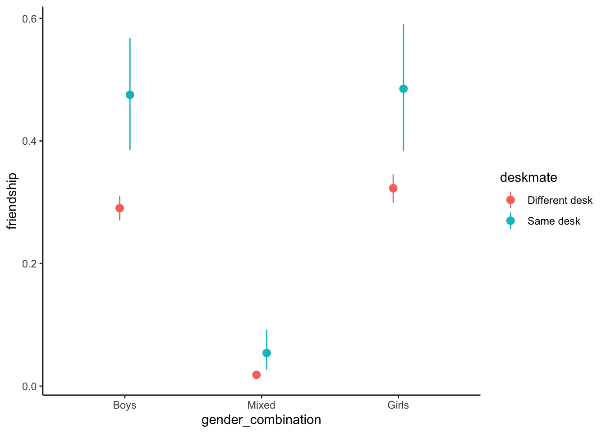
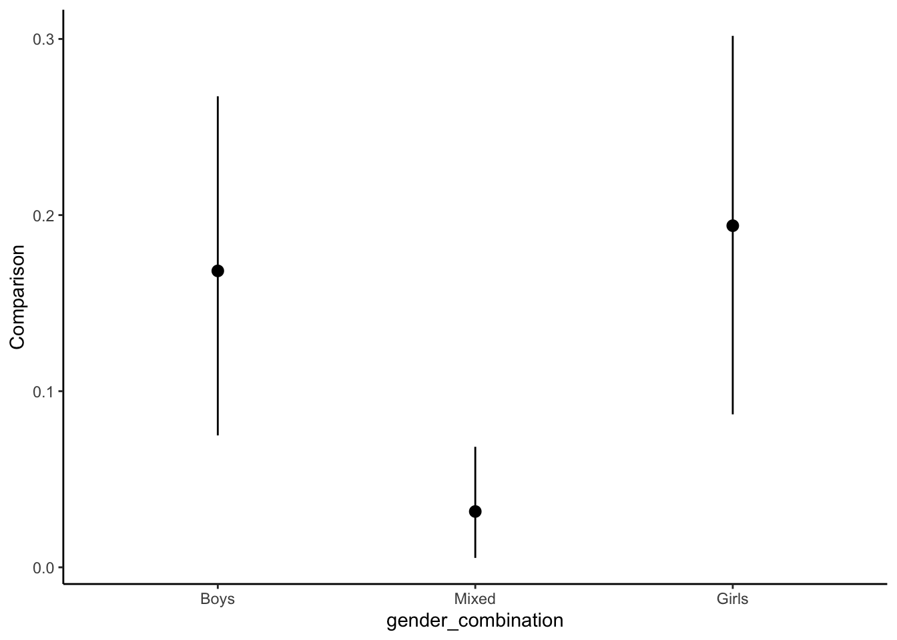

source(here::here("scripts/load.R"))Friends by Chance
Before we start, let’s execute a helper script that loads the necessary dependencies.
Overview
This document contains example 3, in which we analyze the effect of being seated next to each other on friendships, using Bayesian multilevel models. Data can be downloaded from the OSF but are also included in the downloadable replication package.
Every day experience—and previous research—suggests that being spatially close to others can result in friendships. But does spatial proximity also lead to friendships for people who are quite different from each other? We re-analyze data from a large field experiment conducted in 3rd to 8th grade classrooms in rural Hungary previously reported in Rohrer et al. (2021). Proximity was experimentally manipulated by randomizing each classrooms’ seating chart at the beginning of the school semester; thus, students randomly ended up next to each other (deskmate = 1) or not (deskmate = 0). At the end of the semester, students listed up to five best friends from their classroom, which allows us to determine which pairs of students had formed friendships (friendship = 1). Additionally, we know students’ gender and grade point average before the experiment (GPA), which allows us to investigate whether proximity also “works” for girls seated next to boys (who are quite unlikely to befriend each other at that age) or students with discrepant levels of academic achievement.
Read and clean the data
# Read the data
dat <- read.csv(here("data/deskmates.csv"))
# Arbitrary subset of 60 classes to make model-fitting less tedious
dat <- dat[dat$class_id %in% unique(dat$class_id)[1:60], ]
# Keep complete cases
dat <- dat[complete.cases(dat),]
# Label focal variables
dat <- transform(dat,
gender_combination = factor(girl_match, label = c("Boys", "Mixed", "Girls")),
deskmate = factor(deskmate, label = c("Different desk", "Same desk")))
# Rename to match labels in manuscript
dat <- dat |>
rename(GPA_average = mean_gpa,
GPA_difference = diff_gpa,
friendship = friend,
classroom = class_id,
student1 = s1,
student2 = s2)
# Display the first few rows of data
head(dat) any_single deskmate sim_s1_s2 girl_s1 girl_s2 roma_s1 roma_s2 gpa_s1 gpa_s2 friendship friend_s1 friend_s2 girl_match roma_match GPA_average GPA_difference sim_s1_s2_std size size.1 gendermatch classroom school_id student1 student2 gender_combination
1 0 Same desk 0.6500000 1 0 0 0 4.4 4.2 0 0 0 1 0 4.3 0.2 -0.2570821 18 18 0 59379 32 731891 773914 Mixed
2 0 Different desk 0.9566667 1 1 0 0 4.4 5.0 1 1 1 2 0 4.7 0.6 1.0919846 18 18 1 59379 32 731891 492505 Girls
3 0 Different desk 0.6366667 1 0 0 0 4.4 4.0 0 0 0 1 0 4.2 0.4 -0.3157372 18 18 0 59379 32 731891 300996 Mixed
4 0 Different desk 0.6233333 1 0 0 0 4.4 4.2 0 0 0 1 0 4.3 0.2 -0.3743922 18 18 0 59379 32 731891 888954 Mixed
5 0 Different desk 0.9833333 1 1 0 0 4.4 4.6 1 1 1 2 0 4.5 0.2 1.2092947 18 18 1 59379 32 731891 706146 Girls
6 0 Different desk 0.6233333 1 0 0 0 4.4 5.0 0 0 0 1 0 4.7 0.6 -0.3743922 18 18 0 59379 32 731891 288809 MixedBayesian multilevel regression model
Our model here ends up a bit more complex due to the nested structure of the data, and we use the brms package (Bürkner, 2018) which allows us to fit multilevel models in a highly flexible manner. Since we now fit a Bayesian model (relying on the default priors provided by the package), marginaleffects will return credible intervals rather than confidence intervals. Our unit of observation is pairs of students, which are nested within students and classrooms. For each pair, we know: * whether they are deskmates * their gender_combination (both boys, one girl and one boy, both girls) * their GPA_average (i.e., the average across both students) and their absolute GPA_difference (i.e., the discrepancy between both students) * whether they report a friendship at the end of the experiment or not
Here, we fit and save the model to avoid refitting repeatedly.
mod <- brm(
friendship ~ deskmate + gender_combination + deskmate:gender_combination +
GPA_average + GPA_difference + GPA_average:deskmate + GPA_difference:deskmate +
(1 | classroom) + (1 | mm(student1, student2)),
family = bernoulli(link = "logit"),
data = dat,
seed = 12345,
cores = 4
)
# Save model fit
saveRDS(mod, file = here("fits/deskmates.rds"))# Load the fitted model
mod <- readRDS(here("fits/deskmates.rds"))
# Look at the model coefficients
parameters(mod)# Fixed Effects
Parameter | Median | 95% CI | pd | Rhat | ESS
-----------------------------------------------------------------------------------------------
(Intercept) | -1.62 | [-2.34, -0.94] | 100% | 1.000 | 1791.00
deskmateSamedesk | 0.22 | [-1.49, 1.96] | 60.02% | 1.001 | 2402.00
gender_combinationMixed | -3.54 | [-3.88, -3.23] | 100% | 1.002 | 2582.00
gender_combinationGirls | 5.66e-03 | [-0.25, 0.25] | 51.75% | 1.001 | 2254.00
GPA_average | 0.30 | [ 0.13, 0.49] | 99.95% | 1.001 | 1495.00
GPA_difference | -0.42 | [-0.56, -0.28] | 100% | 1.000 | 4267.00
deskmateSamedesk:gender_combinationMixed | 0.12 | [-0.86, 0.98] | 59.62% | 1.000 | 4483.00
deskmateSamedesk:gender_combinationGirls | 0.04 | [-0.69, 0.78] | 54.07% | 1.001 | 4559.00
deskmateSamedesk:GPA_average | 0.18 | [-0.26, 0.62] | 79.67% | 1.000 | 2529.00
deskmateSamedesk:GPA_difference | -0.03 | [-0.60, 0.47] | 54.55% | 1.000 | 4436.00Interpretation with marginaleffects
What is the average treatment effect of being a deskmate on the log-odds of a friendship (link scale)?
In principle, we could evaluate this model on the log-odds scale on which the coefficients are estimated.
avg_comparisons(mod, variables = "deskmate", type = "link")| Estimate | 2.5 % | 97.5 % |
|---|---|---|
| 0.958 | 0.533 | 1.35 |
However, log-odds of friendship are not a particularly intuitive unit, and so instead we may want to switch to the scale of the outcome (friendships)—which is the default behavior of marginaleffects:
What is the average treatment effect of being a deskmate on the probability of a friendship?
# Predicted probabilities
avg_predictions(mod, by = "deskmate")| deskmate | Estimate | 2.5 % | 97.5 % |
|---|---|---|---|
| Different desk | 0.166 | 0.158 | 0.174 |
| Same desk | 0.270 | 0.234 | 0.311 |
# Average Treatment Effect
ate <- avg_comparisons(mod, variables = "deskmate")
ate| Estimate | 2.5 % | 97.5 % |
|---|---|---|
| 0.108 | 0.0697 | 0.15 |
This returns the average effect of the intervention in percentage points.
Comparing our effect to the fast friends procedure
One may want to compare the effect of sitting next to each other to other interventions meant to foster friendships. For example, one staple of psychological research is the fast friends procedure in which two participants are paired up and then take turns answering questions that escalate in the degree of self-disclosure involved, from mild (“Would you like to be famous? In what way?”) to severe (“When did you last cry in front of another person?”). Echols and Ivanich (2021) implemented such a procedure in US middle school students and found that those who underwent the intervention in three sessions over three months were 10 percentage points more likely to become friends. This seems very close to the 11 percentage point effect we observed in our analysis.
Would it be justified to conclude that the effects are practically the same?
In a Frequentist framework, this would be a use case for an equivalence test. Given our Bayesian model, we instead resort to the notion of a region of practical equivalence (ROPE; Kruschke, 2018; Makowski et al., 2019. First, we need to define a range around the 10 percentage points of the fast friends procedure for which we would consider the effects equivalent for practical purposes. Here, we decide that the effect ± a quarter of the effect is a sensible range, resulting in a ROPE of [0.075; 0.125].
Now, we can calculate how likely it is that the effect of sitting next to each other falls into the ROPE of the fast friends procedure. For this, we additionally make use of the convenience provided by the posterior package:
library(posterior)
draws <- get_draws(avg_comparisons(mod, variables = "deskmate"), "rvar")
Pr(draws$rvar < 0.125) # Probability that below the upper bound[1] 0.79775Pr(draws$rvar < 0.075) # Probability that below the lower bound[1] 0.04175# In combination, from this we can conclude the probability that
# the parameter lies within the bounds
Pr(draws$rvar < 0.125) - Pr(draws$rvar < 0.075)[1] 0.756What is the average treatment effect of being a deskmate on the probability of a friendship, at desks with different gender compositions?
Having looked at the average effect of the intervention, we still do not yet know whether being seated next to each other also “works” for dissimilar students. Here, we will keep evaluating effects on the outcome scale, which we consider most intuitive. First, we can separately calculate average effects depending on gender_combination:
avg_comparisons(mod, variables = "deskmate", by = "gender_combination")| gender_combination | Estimate | 2.5 % | 97.5 % |
|---|---|---|---|
| Boys | 0.1683 | 0.07489 | 0.2675 |
| Mixed | 0.0317 | 0.00534 | 0.0684 |
| Girls | 0.1940 | 0.08685 | 0.3018 |
Pairwise comparisons, e.g.: Is the effect of sharing a desk stronger for students on girls-only desks, relative to the effect of sharing a desk for students on mixed-gender desks?
We can easily compare all three average effects against each other in a pairwise manner:
avg_comparisons(mod,
variables = "deskmate",
by = "gender_combination",
hypothesis = ~pairwise)| Hypothesis | Estimate | 2.5 % | 97.5 % |
|---|---|---|---|
| (Mixed) - (Boys) | -0.1355 | -0.2384 | -0.0346 |
| (Girls) - (Boys) | 0.0273 | -0.1169 | 0.1704 |
| (Girls) - (Mixed) | 0.1607 | 0.0441 | 0.2760 |
Is the effect of sharing a desk stronger for students on gender-matched desks, relative to the effect of sharing a desk for students on mixed-gender desks?
We may also want to compare gender-matched dyads (pairs of girls, pairs of boys) with gender-mismatched dyads (pairs of a girl and a boy), (b_Two girls + b_Two boys)/2 = b_One girl one boy. This can be achieved by using a different hypothesis argument (being mindful of the order in which the groups are listed in our output):
avg_comparisons(mod,
variables = "deskmate",
by = "gender_combination",
hypothesis = "(b1 + b3)/2 = b2")| Hypothesis | Estimate | 2.5 % | 97.5 % |
|---|---|---|---|
| (b1+b3)/2=b2 | 0.149 | 0.0667 | 0.229 |
Plotting the effects by gender
We can also visualize these different effects:
# Plot the predicted probabilities
plot_predictions(mod, by = c("gender_combination", "deskmate"))
# Plot the effects of the intervention in percentage points
plot_comparisons(mod, variables = "deskmate", by = "gender_combination")
Marginalizing over vs. conditioning on other variables in the model
Notice that so far, we have conducted counterfactual comparisons across deskmate and then simply averaged by gender_combination. Now, recall that our model also contains GPA_difference. The way we currently analyze the data, we do not condition on GPA_difference during post-estimation—that is, we do not hold it constant at any particular value. The different gender_combinations may systematically vary in their GPA_difference, which may in turn modify the effect of the intervention; these differences will show up in our average comparison by gender_combination. One could say we “marginalize over” the observed GPA_difference distribution. T his “default” behavior is different from how regression coefficients behave, which are always conditional on all other variables in the model.
It turns out that from a causal inference perspective (Rohrer, 2018; Wysocki et al., 2022), marginalizing over GPA_differences rather than conditioning on them is the more reasonable choice. That is because differences in GPA are plausibly causally downstream of gender differences. For gender-mismatched dyads, we may observe larger differences in GPA because gender affects GPA. Thus, if the effects of proximity are larger in gender-mismatched dyads in part because among those dyads, GPA varies more, this indirect effect should count toward the total effect modification by gender combination.
In contrast, when we want to evaluate how GPA_differences affect the effects of proximity, we do want to condition on gender_combination, since the variable is a plausible confounder between GPA_differences and the effects of interest. If the intervention works less for pairs with a larger GPA difference, that may simply be because those pairs are more often mismatched on gender and thus unlikely to befriend each other even when seated next to each other (for a more extensive discussion of the causal status of interactions, see Rohrer & Arslan, 2021).
What is the average treatment effect of sharing a desk for students with high and low differences in GPA, accounting for gender?
So, does the effect of being seated next to each other (deskmate) vary by how strong their academic achievement diverges (GPA_difference), controlling for the effects of gender match (gender_combination)? We can answer this question by conducting comparisons on new hypothetical datasets in which we set GPA_difference to particular values (e.g., ± 1 SD) but keep the other variables (including gender_match) as is.
avg_comparisons(mod,
variables = "deskmate", # cause of interest
by = "GPA_difference", # variable to split by
newdata = datagrid(GPA_difference = c(mean(dat$GPA_difference, na.rm = TRUE) - sd(dat$GPA_difference, na.rm = TRUE),
mean(dat$GPA_difference, na.rm = TRUE) + sd(dat$GPA_difference, na.rm = TRUE)),
grid_type = "counterfactual"))| GPA_difference | Estimate | 2.5 % | 97.5 % |
|---|---|---|---|
| 0.139 | 0.1186 | 0.0597 | 0.182 |
| 1.504 | 0.0973 | 0.0375 | 0.157 |
# the newdata argument is crucial here: we apply the model to new data which represents a counterfactual constrast
# between a world in which everybody's GPA difference is set to 1 SD below the mean
# and a world in which everybody's GPA difference is set to 1 SD above the mean.
# Compare the two estimates
avg_comparisons(mod,
variables = "deskmate", # cause of interest
by = "GPA_difference", # variable to split by
newdata = datagrid(GPA_difference = c(mean(dat$GPA_difference, na.rm = TRUE) - sd(dat$GPA_difference, na.rm = TRUE),
mean(dat$GPA_difference, na.rm = TRUE) + sd(dat$GPA_difference, na.rm = TRUE)),
grid_type = "counterfactual"),
hypothesis = "b1 = b2")| Hypothesis | Estimate | 2.5 % | 97.5 % |
|---|---|---|---|
| b1=b2 | 0.0212 | -0.0664 | 0.116 |